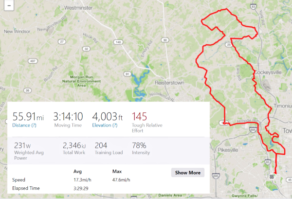

The Ride Guide is a short, concise way of describing ride characteristics. There are 3 primary categories (distance/hilliness/SSSS) to help people better understand what to expect from a given ride.
There are also 3 supplemental categories (food/water/# stops) that we encourage ride leaders to include as well.
More detail on each category can be found throughout this document.
Ride Guide
- Distance (1-5 scale using bike emoji 🚴)
- Hilliness (1-5 scale using bike emoji 🚴)
- Self Sufficiency / Suffer Scale (select appropriate category from the list)
- Food (minimum recommended amount)
- Water (minimum recommended amount)
- Number of planned stops
Here is an example of a Ride Guide that you might see on Facebook. The route and stats are pictured below. Details about each section can be found further on in this document.
Ride Guide
Distance: 🚴🚴🚴
Hilliness: 🚴🚴🚴🚴
SS/SS: Puncher
Food: 5
Water: 2 bottles
Number of Stops: 1
